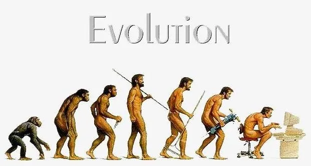

Welcome! My name is Xianzhe Wang (English: Emanuel; Chinese: 王宪喆; Nickname: 小戏).
Currently, my research interests are centered on exploring complex decision-making challenges within the operations management and transport management through data-driven approaches. Specifically, I am keen on how emerging machine learning/deep learning methods (which I refer to as Learning-based) can be integrated with traditional exact and heuristic optimization methods (I refer to as Search-based) in operations research. My goal is to develop an “Intelligent Decision-Making System” that is not only more efficient and faster but also provides greater interpretability and robustness.
I am passionate about tackling complex optimization problems in the real world. I aim to research forecasting and multi-period uncertainty optimization that are prevalent in various fields such as transportation, energy, and supply chain management. My objective is to develop algorithms that are not only theoretically “interesting” but also practically “implementable” and “efficient” in real-world applications.
Additionally, I have a deep interest in cutting-edge AI technologies, including LLMs and AI Agents. I previously served as a senior editor at Xiaoyao Technology, a well-known AI technology media outlet in China, where I authored over a hundred original blog posts, covering topics such as AI tech news, cutting-edge paper interpretation and industry in-depth reviews, garnering over 200,000 + cumulative reads. I have also written business and technical analysis articles and delivered presentations for several companies, including Baidu, Alibaba, OPPO, and Zhiyuan.
[2024.10] üçª I was awarded the Graduate National Scholarship (Top scholarship in China; Awarded to the top 0.2% domestically).
[2024.09] üçª Started a three-month research visit and internship at the Shenzhen Research Institute of Big Data (within The Chinese University of Hong Kong, Shenzhen), exploring the integration of Learning to Optimize techniques with traditional optimization methods. By considering the permutation invariance of optimization problems, the aim is to enhance the efficiency of solving linear and integer programming problems.
[2022.10] üçª Participated in the National Natural Science Foundation of China (NSFC) Key Project: The Theory and Methods of Operating and Managing for Shared Transportation Modes, and conducted research on vehicle scheduling and supply-demand balance strategies within shared transportation systems.
[2022.09] ü뮂Äçüéì Started my Master's study at Beijing University of Chemical Technology, under the supervision of Prof. Xiang Li, a renowned scholar in transportation management, Dean of the School of Economics and Management at Chang'an University, and recognized by Stanford University as one of the top 2% of the world's leading scientists.
[2021.06] üçª Completed DeeCamp 2021, Organized by Kai-Fu Lee. Our team built an information extractor for PDF format bill collection prospectus, proposes a two-step approach from semi-structured pre-parsing to structured extraction, and intgrates image segmentation and OCR technology to complete PDF pre-parsing.
[2021.06] ü뮂Äçüéì Got my bachelor's degree from the School of Business at East China University of Science and Technology, which is among the top 1% of business schools worldwide to have earned the prestigious AACSB, EQUIS, and AMBA accreditations.
[2021.06] üçª My graduation thesis "Research on reverse logistics route planning for fresh produce based on drones under uncertainty" was awarded the Outstanding Undergraduate Thesis.
Selected Publications & Preprints
Dynamic repositioning in bike-sharing systems with uncertain demand: An improved rolling horizon framework
- Xiang Li, Xianzhe Wang, Ziyan Feng*
- Omega-International Journal Of Management Science
- This paper studies a dynamic bike repositioning problem under scenario-based demand to achieve a balance in inventory levels for electronic fences. Specifically, a multi-period two-stage stochastic model is proposed to make the trade-off between operational costs and service quality. The model incorporates a vehicle no-return (VNR) strategy, which allows vehicles to remain at the last station at the end of each period, awaiting the next repositioning task
- Made oral presentation in Fifth Annual Conference of the Intelligent Decision and Game Branch of CSOOPEM.

A parallel genetic algorithm with variable neighborhood search for the vehicle routing problem in forest fire-fighting
- Xiang Li, Nan Chen, Hongguang Ma*, Fapeng Nie, Xianzhe Wang
- IEEE Transactions on Intelligent Transportation Systems
- This paper investigates the route optimization for fire-fighting vehicles and formulates a mixed integer linear programming model to minimize the total losses of overall fire spots. A parallel genetic algorithm with variable neighborhood search (PGA-VNS) is developed, which includes a parallelized evolution process of multiple sub-populations for ensuring the fast convergency to a high-quality solution, and a multi-operator variable searching process to promote the convergency to a nearly optimal solution.

From CoT to Agent: The Most Comprehensive Review is Here! Presented by SJTU
- 小戏、Python
- Xiaoyao Technology

Deconstructing Chains, Trees, and Graphs of Thought: How Can We Optimize the Reasoning Ability of Large Language Models?
- 小戏
- Xiaoyao Technology
Forget Xavier Initialization! The Most Powerful Initialization Method, ZerO, Has Arrived!
- 小戏
- Xiaoyao Technology
Let’s discuss the current state of development for "Sora-like models" in China and explore how significant the gap is compared to Sora.
- 小戏
- Xiaoyao Technology
Six AIGC Unicorns Emerged from China This Year! Tsinghua Alumni Lead Three of Them.
- 小戏、王二狗
- Xiaoyao Technology

2024: The Breakout Year for Humanoid Robots? Exploring the Possibilities from Challenges to Timing.
- 小戏
- Xiaoyao Technology
Breaking Free from OpenAI’s Shadow: Claude 3 Faces Both Praise and Ridicule.
- 小戏
- Xiaoyao Technology
Unmanned Aircraft Listed on Taobao!? EHang’s First Domestic "Air Taxi" Goes on Sale Online, Stock Soars by 30%.
- 小戏
- Xiaoyao Technology
OpenAI's Superalignment Team Releases First Paper, Led by Ilya: Using GPT-2 to Supervise GPT-4.
- 小戏
- Xiaoyao Technology
The Tsinghua Team Launches Vidu, China’s First Video Model to Rival Sora – A Deep Dive into Its Underlying Architecture.
- 小戏
- Xiaoyao Technology
The Controversial Site "PaperWithoutCode": Reporting Unreproducible Papers and Causing First Authors’ Social Fallout?
- 小戏
- Xiaoyao Technology
Is it reasonable to reject a paper solely because the method is "Too Simple"?
- 小戏, 小轶
- Xiaoyao Technology
Which subfield of NLP holds the highest social value?
- 小戏
- Xiaoyao Technology
Three-View Test for Algorithm Engineers
- 小戏, 小轶
- Xiaoyao Technology
Dynamic repositioning in bike-sharing systems
- Xianzhe Wang
- The 5th Annual Academic Conference of the Intelligent Decision and Game Theory Subcommittee of the China Society for Optimization, Overall Planning, and Economic Mathematics
A Data-Centered Perspective on Machine Learning Operations
- Xianzhe Wang
- Baidu NLP Q&A Lab